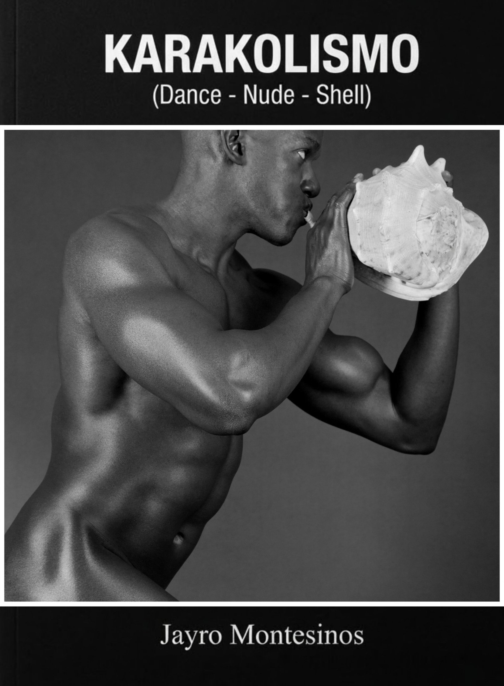
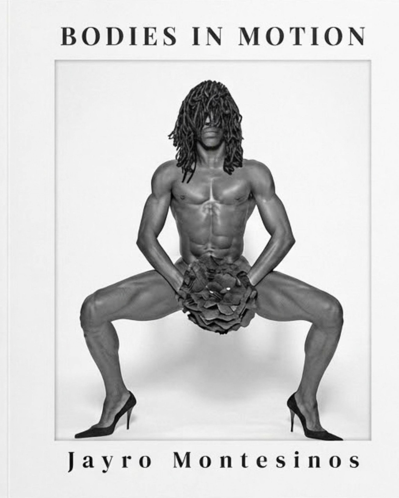
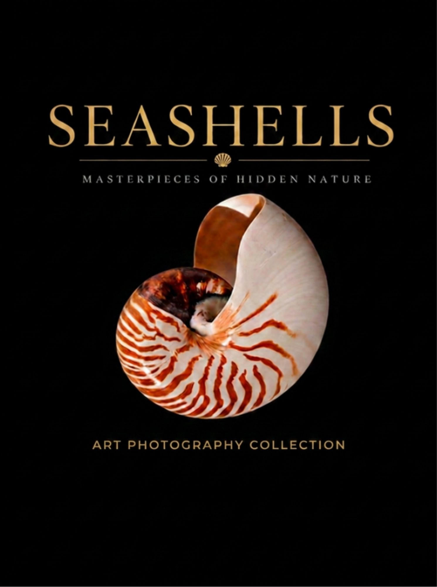
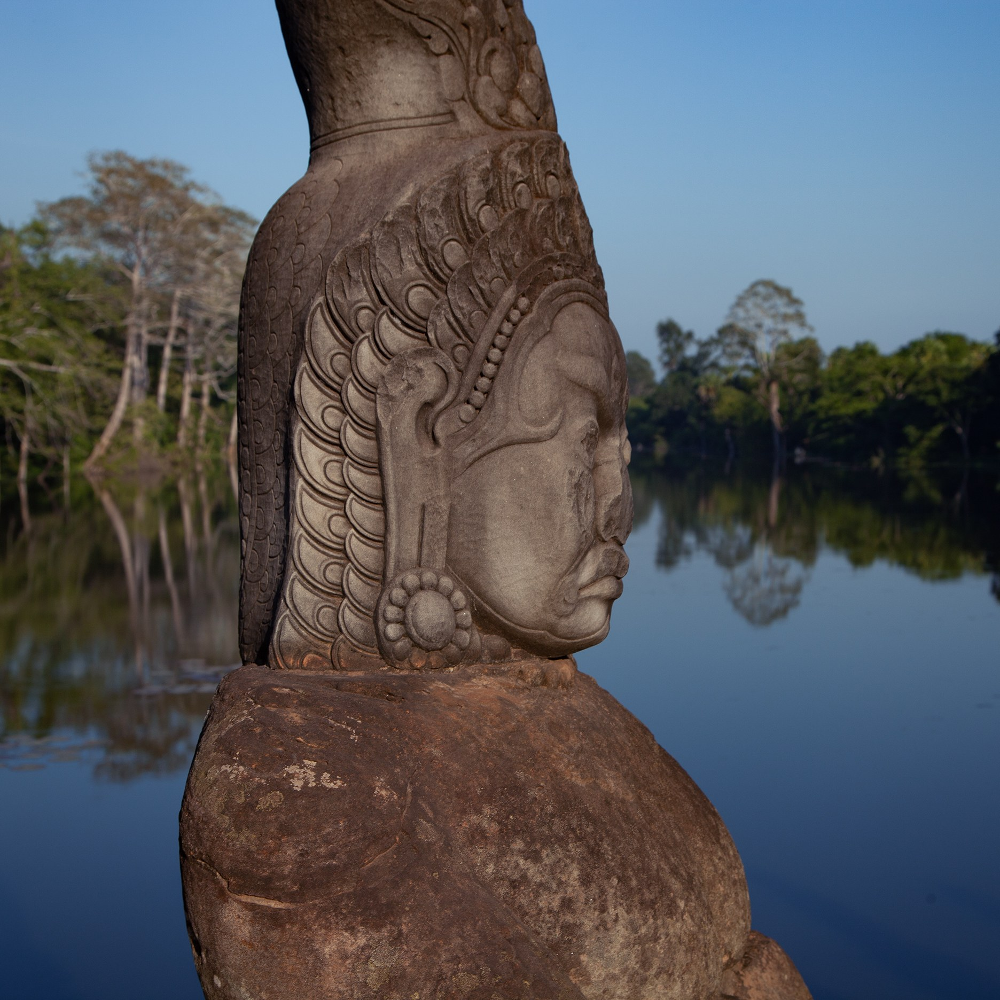
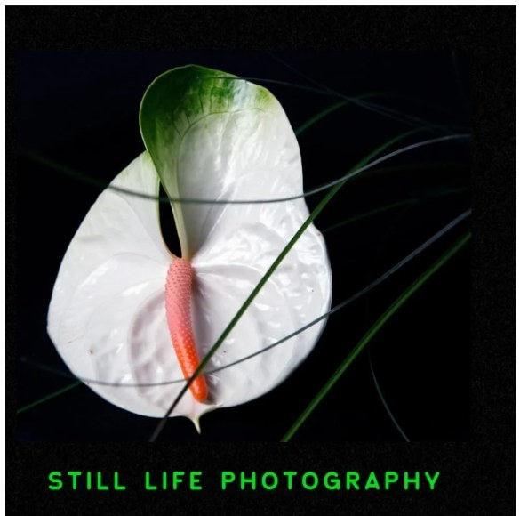
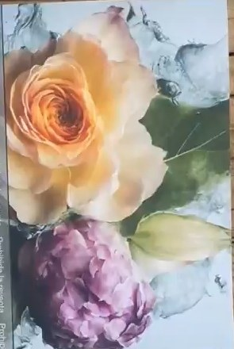
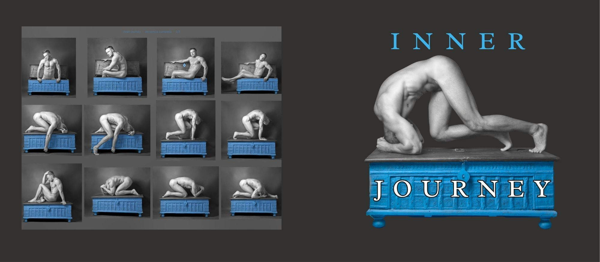

01 / 08
Karakolismo
Male Nude Dance · A Seashell Ritual
Sixty black-and-white photographs of dance, the male nude and seashells.
Buy on Blurb →Publications
A collection of fine art photobooks. Available on Blurb and Amazon worldwide.
Jayro Montesinos is a fine art photographer based in Valencia, Spain. His photobooks bring together series of artistic nude, dance, still life and travel photography, published in print on Blurb and Amazon.
The newest titles are Karakolismo, a black-and-white study of dance, the male body and seashells, and Bodies in Motion, a dance photobook. Every book can be ordered directly from the links below.

Sixty black-and-white photographs of dance, the male nude and seashells.
Buy on Blurb →
A dance photobook about the body in movement.
Buy on Blurb →

Photographs of the temples of Angkor, Cambodia.
Buy on Amazon →
Still life photography of flowers, fruits and marines.
Buy on Amazon →
A fine art photography book by Jayro Montesinos.
Buy on Amazon →
A black-and-white artistic nude photobook.
Buy on Blurb →Available worldwide
Paperback & hardcover editions. International shipping. Signed copies available on request.
View on Amazon